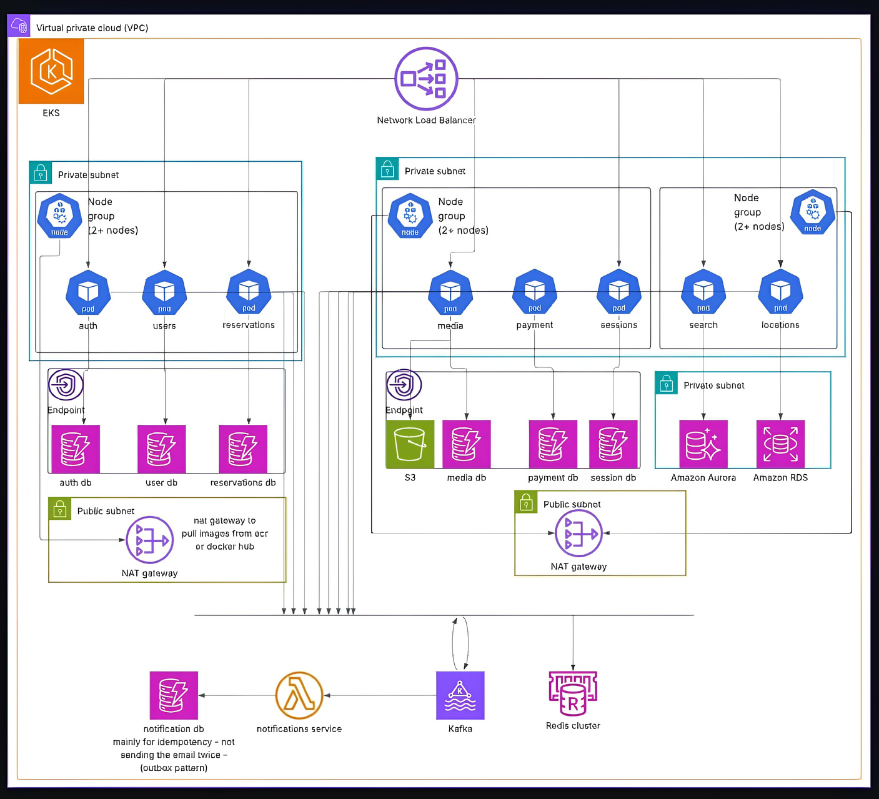

Main project
QuickBite
A three-service food-delivery backend with a transactional outbox, per-country database sharding and idempotent writes. Deploying to AWS now.

Software engineer. Backend, cloud and DevOps.
I build event-driven backends in TypeScript and Go, the data pipelines around them, and the AWS infrastructure they run on.
A three-service food-delivery backend with a transactional outbox, per-country database sharding and idempotent writes. Deploying to AWS now.

SAA-C03, issued October 2026. One of three certificates.
The one large system I'm taking to production.
A multi-tenant food-delivery backend built as three independently deployable services. Customers order, restaurants manage branches and menus, delivery agents get assigned, and owners see analytics. The services share nothing but contracts: synchronous HTTP where an answer is needed now, RabbitMQ events everywhere else.
Owns users, JWT authentication, restaurants, branches, products and the role-permission catalog. Redis caching, S3 media uploads, and a transactional outbox that publishes changes to RabbitMQ. Unit and integration suites run in GitHub Actions CI.
Source ↗The high-write, money-critical path: order lifecycle, Kashier payments and webhooks, delivery assignment and the restaurant ledger. Postgres is sharded per country, critical writes are idempotent, and order status streams live over Socket.io with a Redis adapter.
Source ↗Written in Go. Consumes order, payment and RBAC events, deduplicates them, and folds them into per-day MongoDB rollups inside transactions. Ships with a backfill tool, a 56-check end-to-end suite and an 80% coverage gate.
Source ↗Three credentials, each with a public verification link.

The smaller builds that taught me the pieces.
An event-driven backend for collaborative code review. Comments and review state sync across 50+ concurrent users via Socket.io and Redis, Bull.js queues keep API responses under 150 ms under load, and Redis caching cut average read latency by 92%.
An end-to-end ETL pipeline that ingests daily prices for 50+ cryptocurrencies from the CoinGecko API into PostgreSQL on AWS RDS, scheduled by Apache Airflow on EC2. A dbt star schema with 19 automated tests sits on top, and Terraform provisions all of it in one command.
A Terraform-defined platform for eight microservices on EKS behind a Network Load Balancer. Node groups are split by workload behavior, each service owns its DynamoDB table while search and locations use Aurora and RDS, and a Kafka + Lambda notification path uses an idempotency table to avoid duplicate sends. Compute and data stay in private subnets, AWS traffic goes through VPC endpoints, and IAM roles are scoped per node group.

A tour-booking backend with JWT authentication, Stripe payments, transactional email and image uploads, organized as a modular Express application on MongoDB with a documented Postman API.
Smaller builds and learning projects: ETL pipelines deployed with Docker and Airflow, Terraform exercises, a Bedrock chatbot, Kafka experiments, and serverless APIs with Lambda and API Gateway.
I'm a computer science student at Cairo University (class of 2027) who builds backend systems and the cloud infrastructure underneath them. I'm drawn to the parts of software where correctness matters most: payments, queues, caches, and everything that can go wrong between two services.
My main project is QuickBite, a food-delivery backend split into three services that talk over HTTP and RabbitMQ, with a transactional outbox, per-country database sharding, and real-time order tracking. I'm in the final stage of deploying it to AWS.
In summer 2026 I interned as a data engineer at Creo Technologies, where I built PySpark pipelines on Microsoft Fabric and an NLP pipeline whose findings I presented to the CEO. Along the way I earned two AWS certifications, including Solutions Architect – Associate.
I'm looking for software engineering internships and part-time roles. Email is the fastest way to reach me.